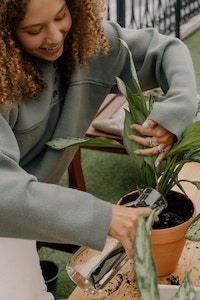

9 Essential Tips for Keeping Your Houseplants Healthy
If you're a new plant parent, all of the care that goes into keeping your houseplants happy can feel a little overwhelming at first. However, most of your plants won't need constant attention to stay healthy. Other than remembering to water, there are plenty of easy-care houseplants that will only need a little maintenance a few times each year. When you need to step in and do some pruning or snip away a few leaves that are starting to turn yellow, these tips will give you the knowledge you need to care for your plants with confidence.
